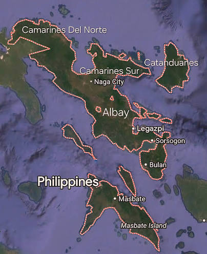

The Bicol Region (Region V) is a southeastern administrative region in the Philippines known for its iconic active volcanoes, fiery cuisine, and rich cultural heritage.
Go to menu to check tourist spot.
